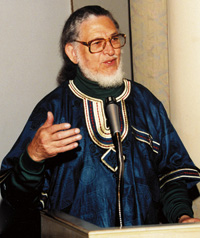

Submitted on Thu, 02/07/2008 - 8:05pm
 FOR
IMMEDIATE RELEASE -
February
1, 2008
FOR
IMMEDIATE RELEASE -
February
1, 2008
Pittsburgh Anti Sweatshop Community
Alliance
Contact Kenneth Miller 412-241-1339
The Workers Rights Consortium
investigator in Bangladesh has been illegally detained, effectively
disappeared. A description of events, confirmed by the US Embassy in
Bangladesh:
Submitted on Mon, 01/14/2008 - 2:37pm

Written on Martin Luther King Day 2008 for my friends attending the 10th Annual Summit Against Racism
Greetings from Durban South Africa to all participants in the 10th Annual Summit Against Racism on January 26 at the East Liberty Presbyterian Church. I made my home in Pittsburgh for many years. I came to Pittsburgh after organizing interracial athletic leagues is Apartheid South Africa and then challenging the International Olympic Committee to ban Apartheid South Africa from the Olympic Games.
Submitted on Wed, 10/31/2007 - 1:24pm
The Thursday Sports and Exhibition Authority meeting has been rescheduled twice already. If you plan to attend, please call the SEA (412-393-0200) on Thursday morning to confirm the meeting time. You can ask to be included you on a list of people who are notified about meeting time changes.
The Pirates have refused to accept the most basic responsibility for factories sewing apparel with the Pirates logo and, with Major League Baseball, made bogus assertions about their own social responsibility. The SEA Executive Director Mary Conturo clearly understands this but has failed to adequately explain to the Board. John Chalovich said at the last meeting that he "does not think the Pirates are using sweatshops" and that he "wishes" all Pirates merchandise was made in the United States. The actionable item for the SEA is to invite the Workers Rights Consortium (WRC)to Pittsburgh and accept its testimony about factories sewing Pirates apparel. The WRC is the Human Rights organization founded with the help of United Students Against Sweatshops that conducts factory monitoring without financial support of the apparel industry.
Since the Pittsburgh Pirates have failed to engage in a forthright dialogue, The Pittsburgh Anti Sweatshop Community Alliance (PASCA) asked the City Controller to investigate ways that the team can be held accountable to Pittsburghers. Deputy Controller Pokora released an audit on October 21 that answered some of our questions. The most important aspect of the Controller's audit is that the City has NO checks and balances to ensure that the team is accountable to our shared concerns/values, like honesty and Human Rights. All SEA members should be reconsidering what they have done with this wholesale give away and work with groups like PASCA to demonstrate what can be done in the absence of accountability mechanisms built into the PNC Park lease arrangement. PASCA asks that the Controller's office follow up on the totality of our request. PGH_Controller_July_3_Sweatshops_Bucco.pdf
The Black Political Empowerment Project (B-PEP) requested the assistance of Board Chairperson John Chalovich in addressing the lack of minority participation/retention in the Building Trades. It is deplorable that the head an important City/County Board has failed to respond. PASCA co-founder Kenneth Miller wrote an information request to the State and Federal Departments of Labor aimed at getting the information needed for a meaningful discussion of equity of minorities and fair share of the state and federal construction subsidies to our region. PA_dol_oct21.pdf
Submitted on Wed, 10/17/2007 - 11:14pm
October 2, 2007 Pittsburgh Mayor Luke Ravenstahl, Kenneth Miller of the Pittsburgh Anti Sweatshop Community Alliance, Sarah Campbell and Rick Adams of the Black Political Empowerment Project, Allegheny County Chief Executive Dan Onorato at the Racial Equity and Empowerment Summit. The news release below was sent out in anticipation of the October 20 SEA meeting. The SEA disappointed us by taking NO ACTION. The Mayor and Chief Executive appoint SEA Board Members. On October 2 they assured PASCA members that they did not intervene. Why did the SEA fail us at the last minute?
September 18, 2007
Contact: Kenneth Miller, 412-241-1339 or
Celeste Taylor 412-670-0937
www.iww.org ¨ www.sweatfree.org/baseball
Submitted on Wed, 09/05/2007 - 12:02am
 This story is on the Nation's website - by Dave Zirin
This story is on the Nation's website - by Dave Zirin
Finally something newsworthy is happening at Camden Yards in September. No, it's not the Baltimore Orioles limping toward another lackluster finish at their ornate ballpark, famous for selling old-time baseball nostalgia at high-end prices. It's the scrappy members of the United Workers Association, fighting both the resistance of the Maryland Stadium Authority (MSA) and the apathy of Orioles owner Peter Angelos for a living wage.
The UWA, a human rights group founded by homeless day laborers in Baltimore, represents 800 low-wage workers who make up the pool of the 100-120 people who keep Camden Yards clean. Stadium workers--the people who clean out the bathroom stalls, sweep up the small mountains of cigarette butts and make the Camden Yards experience as pristine as promised--make poverty wages, just $7 an hour.
 For Immediate Release
For Immediate Release